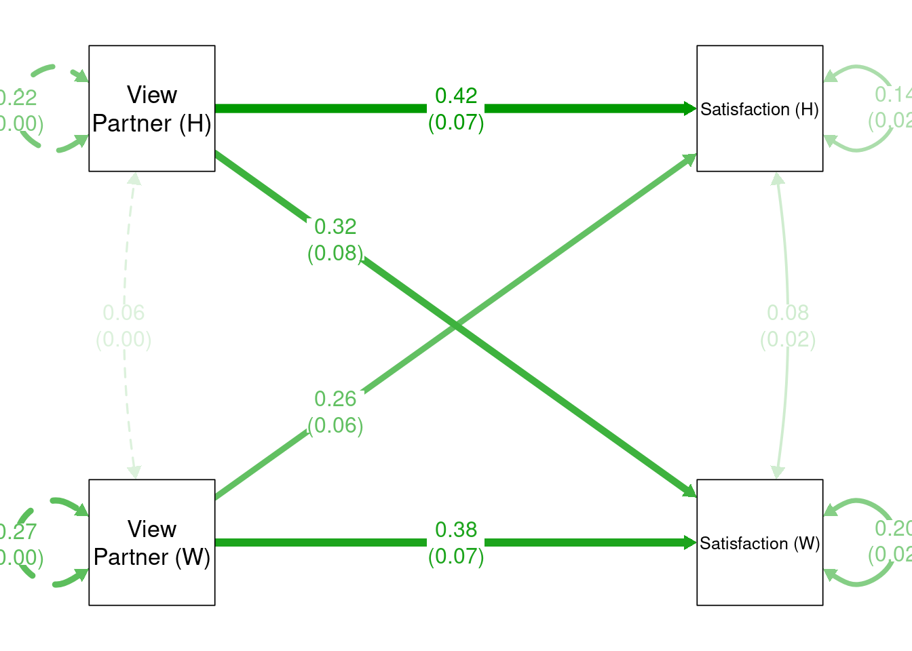

Actor Partner Interdependence Model With Multilevel Analysis
Statistics
Author
Mark Lai
Published
October 23, 2021
Every time I teach multilevel modeling (MLM) at USC, I have students interested in running the actor partner independence model (APIM) using dyadic model. While such models are easier to fit with structural equation modeling, it can also be fit using MLM. In this post I provide a software tutorial for fitting such a model using MLM, and contrast to results to SEM.
Note that this is not a conceptual introduction to APIM. Please check out this chapter and this paper.
There is also this great tutorial on using the nlme package, which uses the dummy variable trick to allow a univariate MLM to handle multivariate analyses. The current blog post is similar but with a different package.
See also https://hydra.smith.edu/~rgarcia/workshop/Day_1-Actor-Partner_Interdependence_Model.html with the same example using nlme::gls().
Load Packages
library(tidyverse)library(psych)library(glmmTMB)
Warning in checkDepPackageVersion(dep_pkg = "TMB"): Package version inconsistency detected.
glmmTMB was built with TMB version 1.9.2
Current TMB version is 1.9.5
Please re-install glmmTMB from source or restore original 'TMB' package (see '?reinstalling' for more information)
Data
The data set comes from https://github.com/RandiLGarcia/dyadr/tree/master/data, which has 148 married couples. You can see the codebook at https://randilgarcia.github.io/week-dyad-workshop/Acitelli%20Codebook.pdf
pair_data <- here::here("data_files", "acipair.RData")# Download data if not already exists in local folderif (!file.exists(pair_data)) {download.file("https://github.com/RandiLGarcia/dyadr/raw/master/data/acipair.RData", pair_data)}load(pair_data)# Show datahead(acipair)
Here we have a hypothetical research question of how a person views their partners (OtherPos_A) and how their partner views them (OtherPos_P) predict their marriage satisfaction (Satisfaction_A).
In this example, there are two major paths of interest:
Actor effect: OtherPos_A to Satisfaction_A
Partner effect: OtherPos_P to Satisfaction_A
In addition, for distinguishable dyads, like husband and wives, we want the gender interactions as well, resulting in four paths of interest (actor/partner effects for husbands/wives).
Warning in fitTMB(TMBStruc): Model convergence problem; non-positive-definite
Hessian matrix. See vignette('troubleshooting')
summary(m_apim2)
Warning in sqrt(diag(vcovs)): NaNs produced
Family: gaussian ( identity )
Formula:
Satisfaction_A ~ 0 + Gender_A + (OtherPos_A + OtherPos_P):Gender_A +
us(0 + Gender_A | CoupleID)
Dispersion: ~Gender_A
Data: acipair
AIC BIC logLik deviance df.resid
NA NA NA NA 285
Random effects:
Conditional model:
Groups Name Variance Std.Dev. Corr
CoupleID Gender_AWife 0.11055 0.3325
Gender_AHusband 0.05823 0.2413 1.00
Residual NA NA
Number of obs: 296, groups: CoupleID, 148
Conditional model:
Estimate Std. Error z value Pr(>|z|)
Gender_AWife 0.61125 0.40861 1.496 0.1347
Gender_AHusband 0.69046 0.33941 2.034 0.0419 *
Gender_AWife:OtherPos_A 0.37770 0.07317 5.162 2.44e-07 ***
Gender_AHusband:OtherPos_A 0.42439 0.06703 6.332 2.42e-10 ***
Gender_AWife:OtherPos_P 0.32148 0.08069 3.984 6.78e-05 ***
Gender_AHusband:OtherPos_P 0.26165 0.06078 4.305 1.67e-05 ***
---
Signif. codes: 0 '***' 0.001 '**' 0.01 '*' 0.05 '.' 0.1 ' ' 1
Dispersion model:
Estimate Std. Error z value Pr(>|z|)
(Intercept) -2.3784 NaN NaN NaN
Gender_AHusband -0.1226 NaN NaN NaN
Indistinguishable Dyads
As the interaction terms were not significant, one may want to remove them. Similarly, the variance components did not look too different across genders, so we may make them equal as well:
my_label_list <-list(list(node ="Satisfaction_A", to ="Satisfaction (W)"),list(node ="Satisfaction_P", to ="Satisfaction (H)"),list(node ="OtherPos_A", to ="View\nPartner (W)"),list(node ="OtherPos_P", to ="View\nPartner (H)"))p2 <-change_node_label(p1, my_label_list)p3 <-mark_se(p2, apim_fit, sep ="\n")my_position_list <-c("Satisfaction_A ~ OtherPos_P"= .25,"Satisfaction_P ~ OtherPos_A"= .25)p4 <-set_edge_label_position(p3, my_position_list)plot(p4)

Indistinguishable Dyads
apim2_mod <-' Satisfaction_A ~ a * OtherPos_A + p * OtherPos_P Satisfaction_P ~ p * OtherPos_A + a * OtherPos_P # Constrain the variances and means to be equal Satisfaction_A ~~ v * Satisfaction_A Satisfaction_P ~~ v * Satisfaction_P Satisfaction_A ~ m * 1 Satisfaction_P ~ m * 1 'apim2_fit <-sem(apim2_mod, data = aciwide)summary(apim2_fit)
lavaan 0.6.16 ended normally after 21 iterations
Estimator ML
Optimization method NLMINB
Number of model parameters 9
Number of equality constraints 4
Number of observations 148
Model Test User Model:
Test statistic 7.277
Degrees of freedom 4
P-value (Chi-square) 0.122
Parameter Estimates:
Standard errors Standard
Information Expected
Information saturated (h1) model Structured
Regressions:
Estimate Std.Err z-value P(>|z|)
Satisfaction_A ~
OtherPos_A (a) 0.400 0.047 8.510 0.000
OtherPos_P (p) 0.288 0.047 6.120 0.000
Satisfaction_P ~
OtherPos_A (p) 0.288 0.047 6.120 0.000
OtherPos_P (a) 0.400 0.047 8.510 0.000
Covariances:
Estimate Std.Err z-value P(>|z|)
.Satisfaction_A ~~
.Satisfaction_P 0.080 0.016 5.145 0.000
Intercepts:
Estimate Std.Err z-value P(>|z|)
.Satsfctn_A (m) 0.670 0.320 2.091 0.036
.Satsfctn_P (m) 0.670 0.320 2.091 0.036
Variances:
Estimate Std.Err z-value P(>|z|)
.Satsfctn_A (v) 0.172 0.016 11.024 0.000
.Satsfctn_P (v) 0.172 0.016 11.024 0.000